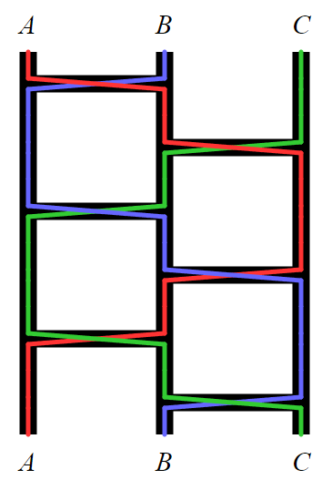

Amidakuji (Japanese: 阿弥陀籤) is a method for producing a random permutation of a set of objects.
In the beginning, a number of parallel vertical lines are drawn, one for each object. Then a specified number of horizontal rungs are added, each lower than any previous rungs. Each rung is drawn as a line segment spanning a randomly select pair of adjacent vertical lines.
For example, the following diagram depicts an Amidakuji with three objects ($A$, $B$, $C$) and six rungs:

The coloured lines in the diagram illustrate how to form the permutation. For each object, starting from the top of its vertical line, trace downwards but follow any rung encountered along the way, and record which vertical we end up on. In this example, the resulting permutation happens to be the identity: $A\mapsto A$, $B\mapsto B$, $C\mapsto C$.
Let $a(m, n)$ be the number of different three-object Amidakujis that have $m$ rungs between $A$ and $B$, and $n$ rungs between $B$ and $C$, and whose outcome is the identity permutation. For example, $a(3, 3) = 2$, because the Amidakuji shown above and its mirror image are the only ones with the required property.
You are also given that $a(123, 321) \equiv 172633303 \pmod{1234567891}$.
Find $a(123456789, 987654321)$. Give your answer modulo $1234567891$.
dev: solve(m=3, n=3) → █
main: solve(m=123456789, n=987654321) → █
Solution pending... the mathematician is still thinking.
Nothing here yet - come back when the dust has settled.